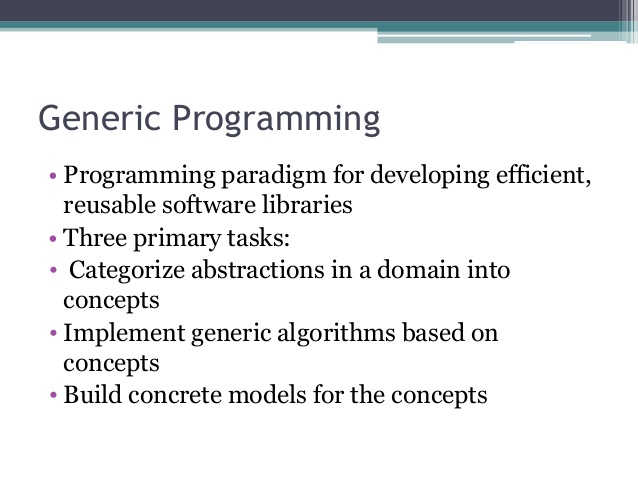

What are generics?
Generic Programming was pioneered by ML in 1973. It permits writing common functions or types that differ only in the set of types on which they operate when used, thus reducing duplication.
Known as... In... Generics Ada, Delphi, Eiffel, Java, C#, F#, Swift, and Visual Basic .NET Parametric Polymorphism ML, Scala and Haskell Templates C++ and D